Regional and functional heterogeneity of hypothalamic astrocytes
Evgenii Tretiakov
Last updated: 2022-11-13
Checks: 6 1
Knit directory: 1_heteroAstrocytes/
This reproducible R Markdown analysis was created with workflowr (version 1.7.0). The Checks tab describes the reproducibility checks that were applied when the results were created. The Past versions tab lists the development history.
The R Markdown is untracked by Git. To know which version of the R Markdown file created these results, you’ll want to first commit it to the Git repo. If you’re still working on the analysis, you can ignore this warning. When you’re finished, you can run wflow_publish to commit the R Markdown file and build the HTML.
Great job! The global environment was empty. Objects defined in the global environment can affect the analysis in your R Markdown file in unknown ways. For reproduciblity it’s best to always run the code in an empty environment.
The command set.seed(20220624) was run prior to running the code in the R Markdown file. Setting a seed ensures that any results that rely on randomness, e.g. subsampling or permutations, are reproducible.
Great job! Recording the operating system, R version, and package versions is critical for reproducibility.
Nice! There were no cached chunks for this analysis, so you can be confident that you successfully produced the results during this run.
Great job! Using relative paths to the files within your workflowr project makes it easier to run your code on other machines.
Great! You are using Git for version control. Tracking code development and connecting the code version to the results is critical for reproducibility.
The results in this page were generated with repository version 1cfad7d. See the Past versions tab to see a history of the changes made to the R Markdown and HTML files.
Note that you need to be careful to ensure that all relevant files for the analysis have been committed to Git prior to generating the results (you can use wflow_publish or wflow_git_commit). workflowr only checks the R Markdown file, but you know if there are other scripts or data files that it depends on. Below is the status of the Git repository when the results were generated:
Ignored files:
Ignored: .Rhistory
Ignored: .Rproj.user/
Ignored: data/comb_astrocytes.bak.h5Seurat
Ignored: data/comb_astrocytes.bak.h5ad
Ignored: data/comb_astrocytes.h5Seurat
Ignored: data/comb_astrocytes.h5ad
Ignored: data/deng2019_arc_chow.h5Seurat
Ignored: data/deng2019_arc_chow.h5ad
Ignored: data/deng2019_arc_chow_astrocytes.h5Seurat
Ignored: data/deng2019_arc_chow_astrocytes.h5ad
Ignored: data/deng2019_arc_chow_astrocytes_fin.h5Seurat
Ignored: data/deng2019_arc_chow_astrocytes_fin.h5ad
Ignored: data/deng2019_arc_chow_clusters.h5Seurat
Ignored: data/deng2019_arc_chow_clusters.h5ad
Ignored: data/deng2019_arc_hfd.h5Seurat
Ignored: data/deng2019_arc_hfd.h5ad
Ignored: data/deng2019_arc_hfd_astrocytes.h5Seurat
Ignored: data/deng2019_arc_hfd_astrocytes.h5ad
Ignored: data/deng2019_arc_hfd_astrocytes_fin.h5Seurat
Ignored: data/deng2019_arc_hfd_astrocytes_fin.h5ad
Ignored: data/deng2019_arc_hfd_clusters.h5Seurat
Ignored: data/deng2019_arc_hfd_clusters.h5ad
Ignored: data/deng2019_arc_refi_astrocytes.h5Seurat
Ignored: data/deng2019_arc_refi_astrocytes.h5ad
Ignored: data/deng_2020_arc_chow.h5Seurat
Ignored: data/deng_2020_arc_chow.h5ad
Ignored: data/deng_2020_arc_chow_astrocytes.h5Seurat
Ignored: data/deng_2020_arc_chow_astrocytes.h5ad
Ignored: data/deng_2020_arc_chow_astrocytes_fin.h5Seurat
Ignored: data/deng_2020_arc_chow_astrocytes_fin.h5ad
Ignored: data/deng_2020_arc_chow_clusters.h5Seurat
Ignored: data/deng_2020_arc_chow_clusters.h5ad
Ignored: data/deng_2020_arc_hfd.h5Seurat
Ignored: data/deng_2020_arc_hfd.h5ad
Ignored: data/deng_2020_arc_hfd_astrocytes.h5Seurat
Ignored: data/deng_2020_arc_hfd_astrocytes.h5ad
Ignored: data/deng_2020_arc_hfd_astrocytes_fin.h5Seurat
Ignored: data/deng_2020_arc_hfd_astrocytes_fin.h5ad
Ignored: data/deng_2020_arc_hfd_clusters.h5Seurat
Ignored: data/deng_2020_arc_hfd_clusters.h5ad
Ignored: data/deng_2020_arc_refi_astrocytes.h5Seurat
Ignored: data/deng_2020_arc_refi_astrocytes.h5ad
Ignored: output/figures/
Untracked files:
Untracked: analysis/2022-11-16_pr.Rmd
Unstaged changes:
Modified: analysis/hfd.Rmd
Modified: code/genes.R
Modified: output/tables/arc_ast.csv
Note that any generated files, e.g. HTML, png, CSS, etc., are not included in this status report because it is ok for generated content to have uncommitted changes.
There are no past versions. Publish this analysis with wflow_publish() to start tracking its development.
genes.embed <- c("Ndrg2", "Slc1a3", "Gfap",
"S100b", "Agt", "Slc6a11",
"Aqp4", "Nfia", "Aldoc",
"Apoe", "Aldh1l1", "Sox9",
"Fgfr3", "Egfr", "Ntrk2")
hypoMap <- readRDS(here(raw_dir, "hypoMap.rds"))skim(hypoMap@meta.data)── Data Summary ────────────────────────
Values
Name hypoMap@meta.data
Number of rows 384925
Number of columns 44
_______________________
Column type frequency:
character 38
numeric 6
________________________
Group variables None
── Variable type: character ────────────────────────────────────────────────────
skim_variable n_missing complete_rate min max empty n_unique
1 Cell_ID 0 1 23 45 0 384925
2 Dataset 0 1 6 16 0 18
3 SRA_ID 76544 0.801 10 11 0 113
4 Sample_ID 0 1 7 31 0 126
5 GEO_ID 97965 0.745 10 10 0 94
6 Run10x 306529 0.204 5 9 0 18
7 Technology 0 1 5 7 0 4
8 Strain 56975 0.852 4 14 0 10
9 Diet 0 1 5 13 0 6
10 Pooled 74085 0.808 2 3 0 3
11 Age 84229 0.781 8 9 0 3
12 Author_Region 0 1 12 41 0 9
13 inferred_sex 0 1 1 1 0 3
14 Author_Exclude 91471 0.762 2 3 0 2
15 Author_Class 219514 0.430 2 16 0 19
16 Author_CellType 182688 0.525 2 47 0 654
17 Phase 0 1 1 3 0 3
18 Batch_ID 0 1 14 24 0 29
19 Author_Condition 212466 0.448 0 34 512 28
20 Sex 79981 0.792 1 1 0 3
21 Author_Batch 364036 0.0543 2 2 0 6
22 Author_Class_Curated 0 1 5 16 0 14
23 C2 0 1 4 4 0 2
24 C7 0 1 4 4 0 7
25 C25 0 1 5 6 0 25
26 C66 0 1 5 6 0 66
27 C185 0 1 6 8 0 185
28 C286 0 1 6 8 0 286
29 C465 0 1 6 8 0 465
30 C2_named 0 1 13 17 0 2
31 C7_named 0 1 9 21 0 7
32 C25_named 0 1 11 25 0 25
33 C66_named 0 1 11 30 0 66
34 C185_named 0 1 12 40 0 185
35 C286_named 0 1 12 49 0 286
36 C465_named 0 1 12 60 0 465
37 Region_predicted 203334 0.472 12 55 0 21
38 Region_summarized 203334 0.472 12 55 0 15
whitespace
1 0
2 0
3 0
4 0
5 0
6 0
7 0
8 0
9 0
10 0
11 0
12 0
13 0
14 0
15 0
16 0
17 0
18 0
19 0
20 0
21 0
22 0
23 0
24 0
25 0
26 0
27 0
28 0
29 0
30 0
31 0
32 0
33 0
34 0
35 0
36 0
37 0
38 0
── Variable type: numeric ──────────────────────────────────────────────────────
skim_variable n_missing complete_rate mean sd
1 nCount_RNA 0 1 4812. 4326.
2 nFeature_RNA 0 1 2172. 1227.
3 percent_mt 0 1 2.55 2.39
4 percent_exclude_features 0 1 0.265 0.178
5 S.Score 0 1 -0.00464 0.0495
6 G2M.Score 0 1 -0.0215 0.0645
p0 p25 p50 p75 p100 hist
1 1000 2038 3388 6012 52648 ▇▁▁▁▁
2 500 1231 1854 2837 8739 ▇▃▁▁▁
3 0 0.657 1.86 3.90 10 ▇▃▂▁▁
4 0.00661 0.175 0.250 0.331 11.0 ▇▁▁▁▁
5 -0.138 -0.0362 -0.0111 0.0182 1.06 ▇▁▁▁▁
6 -0.172 -0.0535 -0.0269 0.00151 1.87 ▇▁▁▁▁if (!file.exists(here(raw_dir, "hypoMap.h5Seurat"))) {
SaveH5Seurat(hypoMap,
filename = here(raw_dir, "hypoMap.h5Seurat"))
Convert(here(raw_dir, "hypoMap.h5Seurat"),
dest = "h5ad")
}
Idents(hypoMap) <- "C25_named"
astroMap <-
hypoMap |>
subset(idents = c("C25-18: Astrocytes"))
if (!file.exists(here(raw_dir, "astroMap.h5Seurat"))) {
SaveH5Seurat(astroMap,
filename = here(raw_dir, "astroMap.h5Seurat"))
Convert(here(raw_dir, "astroMap.h5Seurat"),
dest = "h5ad")
}
arcMap <-
hypoMap |>
subset(subset = (Author_Region == "Arcuate Nucleus/Median Eminence" & Author_Class_Curated %in% c("Astrocytes", "Neurons")) | (Region_summarized == "Arcuate hypothalamic nucleus" & Author_Class_Curated %in% c("Astrocytes", "Neurons"))) |>
subset(subset = Author_CellType %in% c("Agrp/Gm8773", "Agrp/Sst", "Pomc/Ttr", "Pomc/Anxa2", "Pomc/Glipr1") | C25_named == "C25-18: Astrocytes" | C66_named %in% c("C66-46: Agrp.GABA-4", "C66-19: Pomc.GLU-5")) |>
subset(subset = C66_named %in% c("C66-53: Etnppl.Astrocytes", "C66-54: Lgals3.Astrocytes", "C66-47: Sst.GABA-4", "C66-46: Agrp.GABA-4", "C66-19: Pomc.GLU-5", "C66-41: Tbx3.GABA-1") & Diet == "Normal chow")
if (!file.exists(here(raw_dir, "arcMap.h5Seurat"))) {
SaveH5Seurat(hypoMap,
filename = here(raw_dir, "arcMap.h5Seurat"))
Convert(here(raw_dir, "arcMap.h5Seurat"),
dest = "h5ad")
}
rm(hypoMap)
gc() used (Mb) gc trigger (Mb) max used (Mb)
Ncells 8417882 449.6 14168677 756.7 12648476 675.6
Vcells 320734970 2447.1 2939718892 22428.3 3661854229 27937.8Ohlig2021_die_astro <- LoadH5Seurat(here(ext1_dir, "astrocytes.h5Seurat"))Deng2020_arc_astro <- LoadH5Seurat(here(data_dir, "deng_2020_arc_chow_astrocytes.h5Seurat"))
Deng2020_arc_all <- LoadH5Seurat(here(data_dir, "deng_2020_arc_chow_clusters.h5Seurat"))
Lutomska2022_arc_astro <- LoadH5Seurat(here(ext2_dir, "astrocytes.h5Seurat"))
Lutomska2022_arc_astro <-
RenameCells(object = Lutomska2022_arc_astro ,
new.names = str_c(Cells(Lutomska2022_arc_astro),
"SRR19578591",
sep = "_")
)
Lutomska2022_arc_all <- LoadH5Seurat(here(ext2_dir, "Lutomska2022.h5Seurat"))
Lutomska2022_arc_all <-
RenameCells(object = Lutomska2022_arc_all ,
new.names = str_c(Cells(Lutomska2022_arc_all),
"SRR19578591",
sep = "_")
)Deng2020_arc_astro@meta.data <-
Deng2020_arc_astro@meta.data |>
select(nCount_RNA:nFeature_SCT, study_id, sex, tech, subsets_mito_percent, ident) |>
rename(Technology = tech,
percent_mt = subsets_mito_percent,
Sex = sex,
Dataset = study_id,
Batch_ID = ident) |>
mutate(Author_Region = "Arcuate Nucleus/Median Eminence",
Batch_ID = str_c("Deng10xv3", Batch_ID, sep = "_"),
Sex = if_else(Sex == "male", "M", "F"),
Dataset = "Deng10x")
DefaultAssay(object = Deng2020_arc_astro) <- "RNA"
Deng2020_arc_astro <-
Deng2020_arc_astro |>
DietSeurat(assays = "RNA")
Lutomska2022_arc_astro@meta.data <-
Lutomska2022_arc_astro@meta.data |>
select(-(SCT_snn_res.0.01:k_tree)) |>
rename(Batch_ID = orig.ident) |>
mutate(Author_Region = "Arcuate Nucleus/Median Eminence",
SRA_ID = "SRR19578591")
DefaultAssay(object = Lutomska2022_arc_astro) <- "RNA"
Lutomska2022_arc_astro <-
Lutomska2022_arc_astro |>
DietSeurat(assays = "RNA")
DefaultAssay(object = Deng2020_arc_all) <- "RNA"
Deng2020_arc_all@meta.data <-
Deng2020_arc_all@meta.data |>
select(nCount_RNA:nFeature_SCT, study_id, sex, tech, subsets_mito_percent, ident, seurat_clusters) |>
rename(Technology = tech,
percent_mt = subsets_mito_percent,
Sex = sex,
Dataset = study_id,
Batch_ID = ident) |>
mutate(Author_Region = "Arcuate Nucleus/Median Eminence",
Batch_ID = str_c("Deng10xv3", Batch_ID, sep = "_"),
Sex = if_else(Sex == "male", "M", "F"),
Dataset = "Deng10x")
Deng2020_arc <-
subset(Deng2020_arc_all,
subset = seurat_clusters %in% c(3,6,7)) |>
DietSeurat(assays = "RNA")
Lutomska2022_arc_all@meta.data <-
Lutomska2022_arc_all@meta.data |>
select(-(SCT_snn_res.0.01:k_tree)) |>
rename(Batch_ID = orig.ident) |>
mutate(Author_Region = "Arcuate Nucleus/Median Eminence",
SRA_ID = "SRR19578591")
DefaultAssay(object = Lutomska2022_arc_all) <- "RNA"
Lutomska2022_arc_all <-
Lutomska2022_arc_all |>
DietSeurat(assays = "RNA")
gc() used (Mb) gc trigger (Mb) max used (Mb)
Ncells 8719181 465.7 14168677 756.7 14168677 756.7
Vcells 705472386 5382.4 1881420092 14354.1 3661854229 27937.8Visualise astrocytes
plEmbOrig <- DimPlot(astroMap, reduction = "umap_scvi",
group.by = "Batch_ID",
label = TRUE, repel = TRUE)astroMap <- merge(astroMap, y = c(Deng2020_arc_astro, Lutomska2022_arc_astro), project = "hypothalamic_astrocytes")
astroMapAn object of class Seurat
57762 features across 52105 samples within 1 assay
Active assay: RNA (57762 features, 0 variable features)astroMap <-
SCTransform(astroMap, vst.flavor = "v2",
# vars.to.regress = "percent_mt",
method = "glmGamPoi",
variable.features.n = 5000,
return.only.var.genes = FALSE,
seed.use = reseed,
verbose = FALSE) |>
RunPCA(seed.use = reseed,
verbose = FALSE) |>
RunUMAP(reduction = "pca",
densmap = TRUE, dims = 1:50,
seed.use = reseed, verbose = FALSE)
plEmbRawBatch <- DimPlot(astroMap, reduction = "umap",
group.by = "Batch_ID",
label = TRUE, repel = TRUE)
plEmbRawReg <- DimPlot(astroMap, reduction = "umap",
group.by = "Author_Region",
label = TRUE, repel = TRUE)
plEmbRawBatch + plEmbRawReg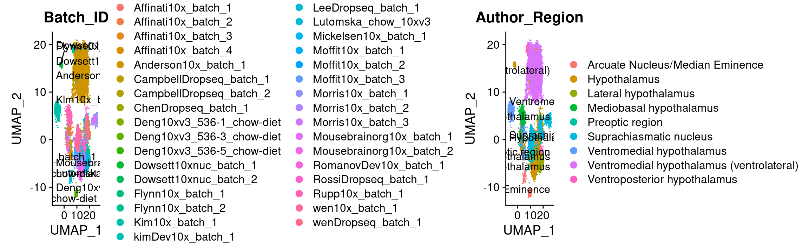
Integration of astrocytes
srt_list <- Seurat::SplitObject(astroMap, split.by = "Batch_ID")
srt_list <- lapply(X = srt_list,
vst.flavor = "v2",
FUN = SCTransform,
# vars.to.regress = "percent_mt",
method = "glmGamPoi",
variable.features.n = 5000,
return.only.var.genes = FALSE,
seed.use = reseed,
verbose = FALSE)
features <- SelectIntegrationFeatures(object.list = srt_list, nfeatures = 3000, verbose = FALSE)srt_list <-
srt_list[
!(map(srt_list, ncol) |>
map(~ .x < 99) |>
simplify())
]
npcs <- 50
srt_list <- lapply(X = srt_list, FUN = RunPCA, features = features, npcs = npcs, seed.use = reseed, verbose = FALSE)
srt_list <- PrepSCTIntegration(object.list = srt_list, anchor.features = features)
anchors <- FindIntegrationAnchors(
object.list = srt_list,
normalization.method = "SCT",
anchor.features = features,
reduction = "rpca",
dims = 1:30,
k.anchor = 20,
verbose = FALSE
)
combined_sct <- IntegrateData(
anchorset = anchors,
normalization.method = "SCT",
dims = 1:30,
verbose = FALSE
)
metadata = combined_sct@meta.data
rownames(metadata) = colnames(combined_sct)
ref.labels = metadata$Author_Region
combined_sct <-
RunPCA(combined_sct, npcs = npcs,
seed.use = reseed, verbose = FALSE)
combined_sctAn object of class Seurat
83030 features across 51734 samples within 3 assays
Active assay: integrated (426 features, 426 variable features)
2 other assays present: RNA, SCT
1 dimensional reduction calculated: pcacombined_sct <- combined_sct |>
RunUMAP(reduction = "pca", return.model = TRUE,
densmap = TRUE, dims = 1:npcs,
seed.use = reseed, verbose = FALSE) |>
FindNeighbors(reduction = "pca", dims = 1:npcs, verbose = FALSE)
resolutions <-
modularity_event_sampling(
A = combined_sct@graphs$integrated_snn,
n.res = 30,
gamma.min = 0.01,
gamma.max = 2.5
) # sample based on the similarity matrix
# clustering using Suerat
combined_sct <- combined_sct |>
FindClusters(algorithm = 4, method = "igraph",
resolution = resolutions, random.seed = reseed,
verbose = FALSE)
# initial cluster tree from Seurat flat clustering
plot_clustree(
labelmat = combined_sct@meta.data,
prefix = 'integrated_snn_res.',
ref.labels = ref.labels,
plot.ref = FALSE
)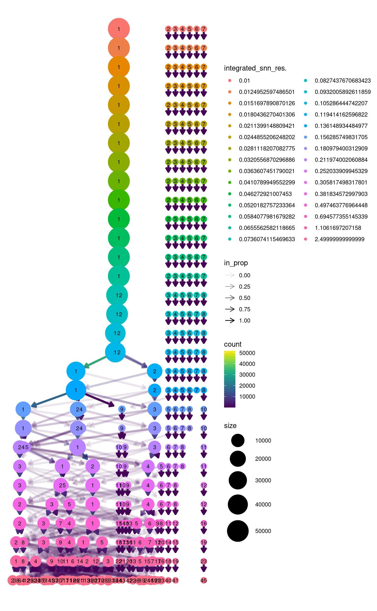
|
|======================================================================| 100%
|
|= | 1%
|
|= | 2%
|
|== | 3%
|
|== | 4%
|
|=== | 4%
|
|==== | 5%
|
|==== | 6%
|
|===== | 7%
|
|====== | 8%
|
|====== | 9%
|
|======= | 10%
|
|======== | 11%
|
|======== | 12%
|
|========= | 12%
|
|========= | 13%
|
|========== | 14%
|
|=========== | 15%
|
|=========== | 16%
|
|============ | 17%
|
|============ | 18%
|
|============= | 19%
|
|============== | 20%
|
|============== | 21%
|
|=============== | 21%
|
|================ | 22%
|
|================ | 23%
|
|================= | 24%
|
|=================== | 27%
|
|=================== | 28%
|
|==================== | 29%
|
|===================== | 29%
|
|===================== | 30%
|
|====================== | 31%
|
|====================== | 32%
|
|======================= | 33%
|
|======================== | 34%
|
|======================== | 35%
|
|========================= | 36%
|
|========================== | 37%
|
|========================== | 38%
|
|=========================== | 38%
|
|============================ | 39%
|
|============================ | 40%
|
|============================= | 41%
|
|============================= | 42%
|
|============================== | 43%
|
|=============================== | 44%
|
|================================ | 46%
|
|================================== | 48%
|
|================================== | 49%
|
|=================================== | 50%
|
|==================================== | 51%
|
|==================================== | 52%
|
|===================================== | 53%
|
|====================================== | 54%
|
|======================================= | 55%
|
|======================================= | 56%
|
|======================================== | 57%
|
|========================================= | 58%
|
|========================================= | 59%
|
|========================================== | 60%
|
|========================================== | 61%
|
|=========================================== | 62%
|
|============================================ | 62%
|
|============================================ | 63%
|
|============================================= | 64%
|
|============================================== | 65%
|
|============================================== | 66%
|
|=============================================== | 67%
|
|================================================ | 68%
|
|================================================= | 70%
|
|================================================= | 71%
|
|================================================== | 71%
|
|=================================================== | 72%
|
|=================================================== | 73%
|
|==================================================== | 74%
|
|==================================================== | 75%
|
|===================================================== | 76%
|
|====================================================== | 77%
|
|====================================================== | 78%
|
|======================================================= | 79%
|
|======================================================== | 79%
|
|======================================================== | 80%
|
|========================================================= | 81%
|
|========================================================== | 82%
|
|========================================================== | 83%
|
|=========================================================== | 84%
|
|=========================================================== | 85%
|
|============================================================ | 86%
|
|============================================================= | 87%
|
|============================================================= | 88%
|
|============================================================== | 88%
|
|============================================================== | 89%
|
|=============================================================== | 90%
|
|================================================================ | 91%
|
|================================================================ | 92%
|
|================================================================= | 93%
|
|================================================================== | 94%
|
|================================================================== | 95%
|
|=================================================================== | 96%
|
|==================================================================== | 96%
|
|==================================================================== | 97%
|
|===================================================================== | 98%
|
|===================================================================== | 99%
|
|======================================================================| 100%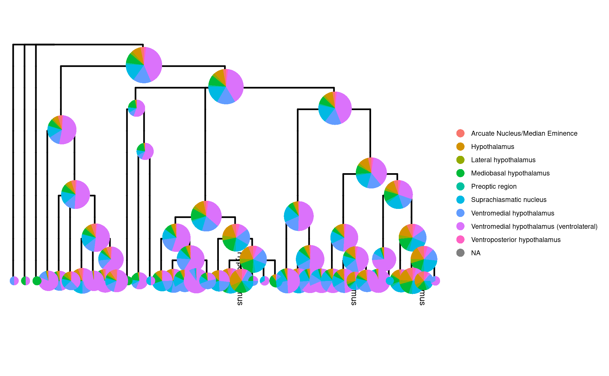
# Adjusted Multiresolution Rand Index (AMRI)
ks.flat <- apply(
out$labelmat.flat,
2,
FUN = function(x)
length(unique(x))
)
ks.mrtree <- apply(
out$labelmat.mrtree,
2,
FUN = function(x)
length(unique(x))
)
amri.flat <- sapply(1:ncol(out$labelmat.flat), function(i)
AMRI(out$labelmat.flat[, i], ref.labels)$amri)
amri.flat <- aggregate(amri.flat, by = list(k = ks.flat), FUN = mean)
amri.recon <- sapply(1:ncol(out$labelmat.mrtree), function(i)
AMRI(out$labelmat.mrtree[, i], ref.labels)$amri)
df <- rbind(
data.frame(
k = amri.flat$k,
amri = amri.flat$x,
method = 'Seurat flat'
),
data.frame(k = ks.mrtree, amri = amri.recon, method = 'MRtree')
)
ggplot2::ggplot(data = df, aes(x = k, y = amri, color = method)) + geom_line() + theme_bw()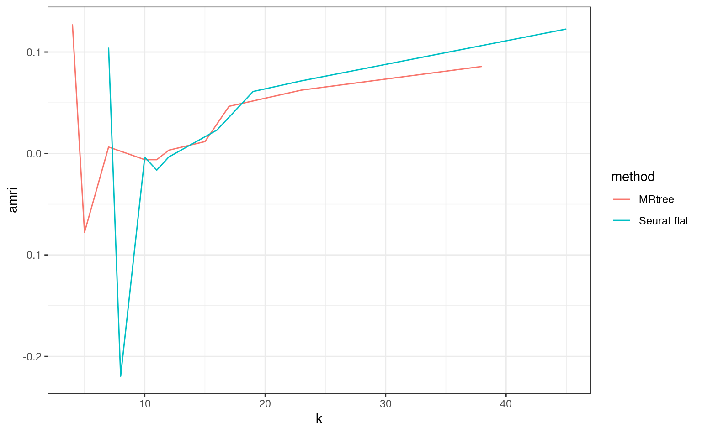
stab.out <- stability_plot(out)
stab.out$plot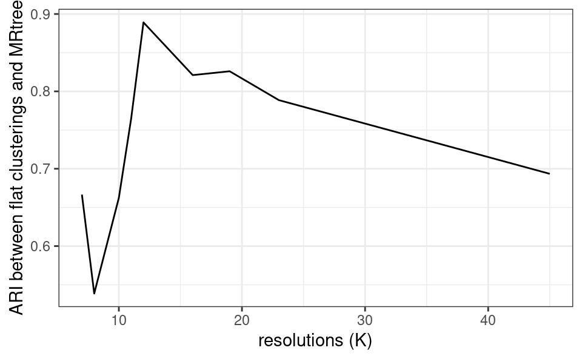
Plot by nucleus
plEmbCombBatch <- DimPlot(combined_sct, reduction = "umap",
group.by = "Batch_ID",
label = TRUE, repel = TRUE)
plEmbCombReg <- DimPlot(combined_sct, reduction = "umap",
group.by = "Author_Region",
label = TRUE, repel = TRUE)
plEmbCombBatch + plEmbCombReg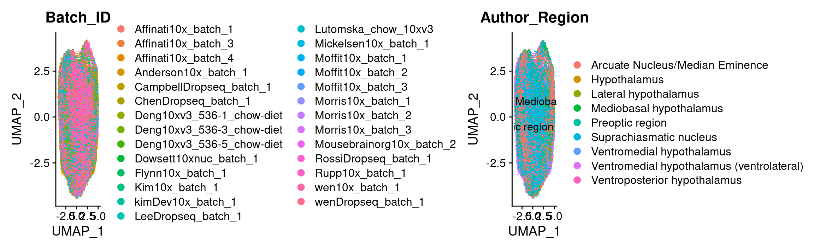
combined_sct$k_tree <- as.factor(out$labelmat.mrtree[, "K17"])
p1 <- DimPlot(combined_sct, label = T, repel = T) + ggtitle("Unsupervised clustering")
p2 <- DimPlot(combined_sct, label = T, repel = T, group.by = "k_tree") + ggtitle("MRTree")
p1 | p2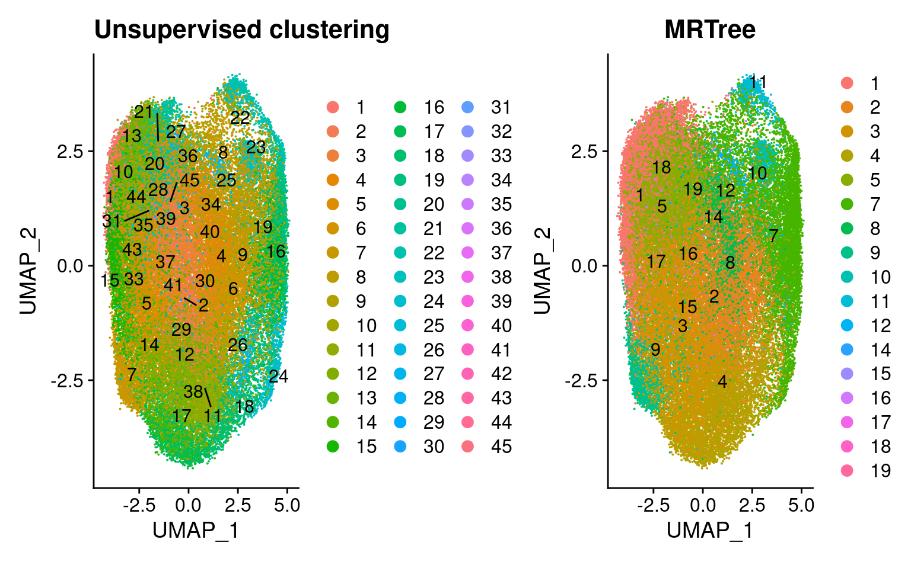
library(schex)
combined_sct <- make_hexbin(combined_sct, nbins = 60, dimension_reduction = "UMAP")
plot_hexbin_density(combined_sct)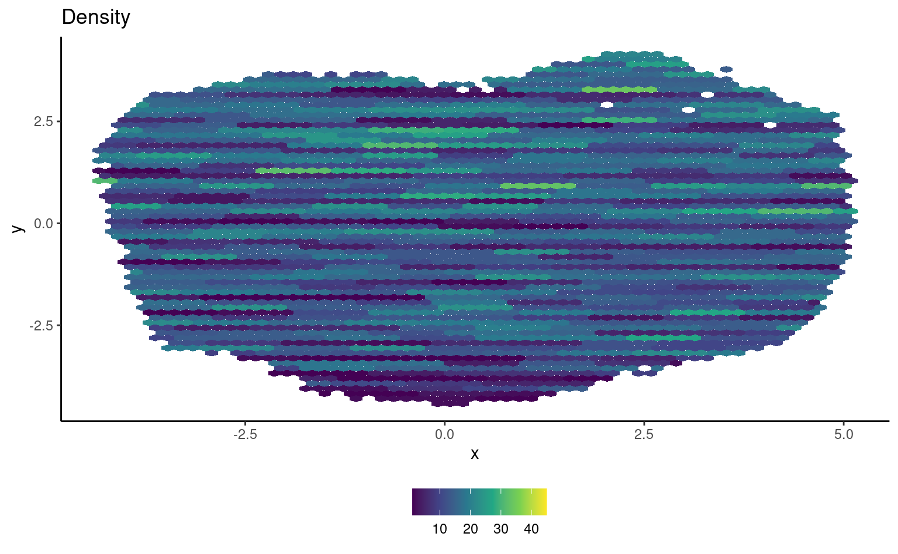
plot_hexbin_meta(combined_sct, col = "nCount_RNA", action = "median")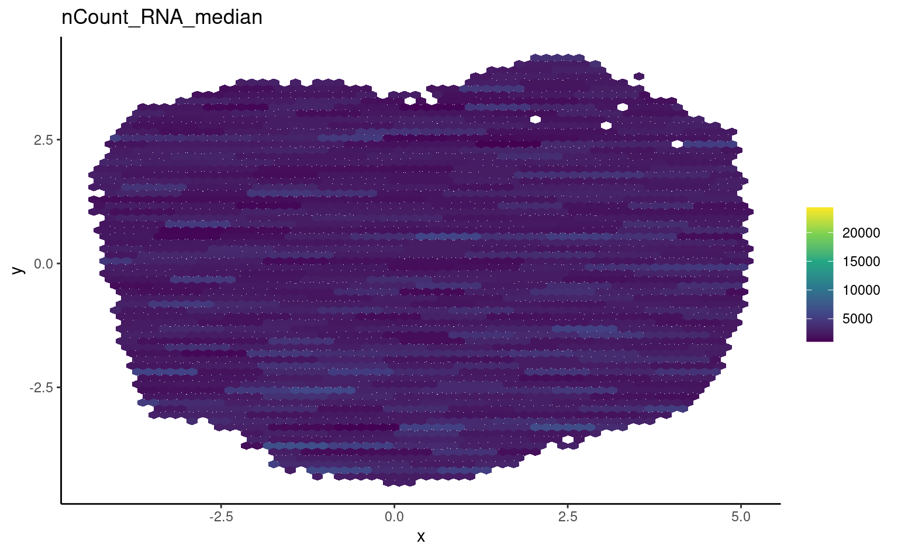
plot_hexbin_meta(combined_sct, col = "k_tree", action = "majority")
label_df <- make_hexbin_label(combined_sct, col = "k_tree")
pp <- plot_hexbin_meta(combined_sct, col = "k_tree", action = "majority")
pp + ggrepel::geom_label_repel(data = label_df, aes(x = x, y = y, label = label), colour = "black",
label.size = NA, fill = NA)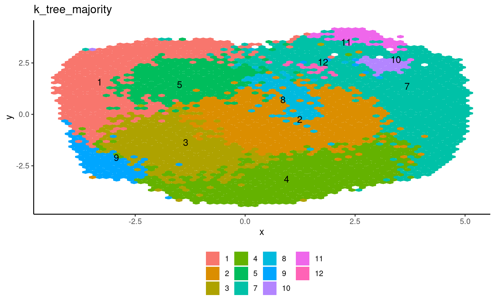
reg_df <- make_hexbin_label(combined_sct,
col = "Author_Region")
pp2 <- plot_hexbin_meta(combined_sct,
col = "Author_Region",
action = "majority")
pp2 + ggrepel::geom_label_repel(data = reg_df,
aes(x = x, y = y,
label = label),
colour = "black",
label.size = NA, fill = NA)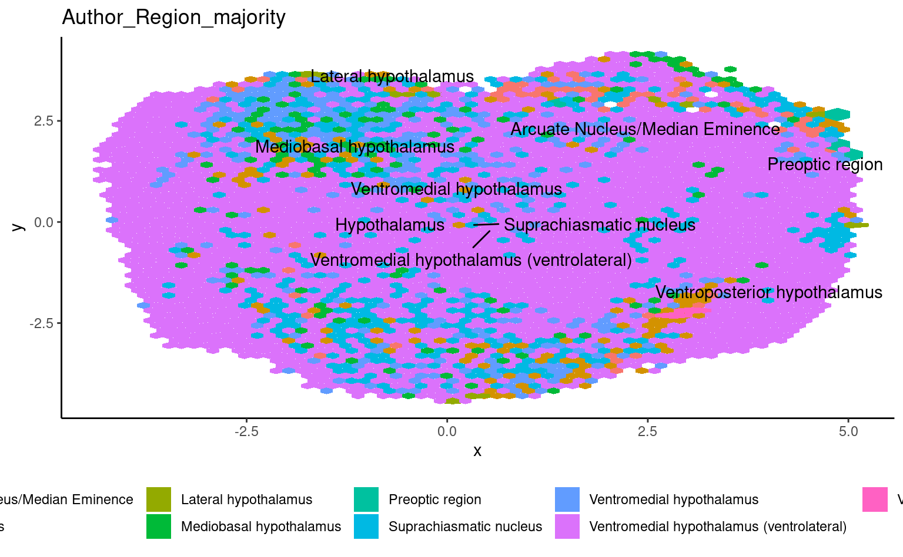
Idents(combined_sct) <- "k_tree"
srt.markers <- FindAllMarkers(combined_sct, only.pos = TRUE, min.pct = 0.25, logfc.threshold = 0.25)
readr::write_csv(srt.markers,
here(tables_dir,
'astr_k17-mrk_wilcox-sct.csv'))
srt.markers %>%
group_by(cluster) %>%
slice_max(n = 3, order_by = avg_log2FC)# A tibble: 36 × 7
# Groups: cluster [12]
p_val avg_log2FC pct.1 pct.2 p_val_adj cluster gene
<dbl> <dbl> <dbl> <dbl> <dbl> <fct> <chr>
1 9.35e- 19 16.5 0.423 0.277 3.98e- 16 1 Neat1
2 0 8.22 0.956 0.426 0 1 Malat1
3 6.18e- 32 7.99 0.508 0.382 2.63e- 29 1 Dclk1
4 9.09e-245 2.69 0.569 0.42 3.87e-242 2 Tsc22d3
5 1.02e-113 2.27 0.514 0.381 4.35e-111 2 Cox5a
6 0 1.75 0.704 0.42 0 2 Mt1
7 1.01e- 26 5.05 0.377 0.378 4.31e- 24 3 Tprgl
8 2.24e- 6 3.13 0.382 0.402 9.55e- 4 3 Lsm6
9 1.19e- 36 2.69 0.484 0.423 5.07e- 34 3 S100a16
10 0 15.9 0.835 0.326 0 4 Nnat
# … with 26 more rowssrt.markers %>%
group_by(cluster) %>%
top_n(n = 10, wt = avg_log2FC) -> top10
DoHeatmap(combined_sct, features = top10$gene,
size = 4, angle = 90) + NoLegend()plEmbCombCMrk <- FeaturePlot(
combined_sct,
features = genes.embed[genes.embed %in%
rownames(combined_sct@assays$SCT@scale.data)],
min.cutoff = "q10", max.cutoff = "q90",
ncol = 3
)
plEmbCombCMrk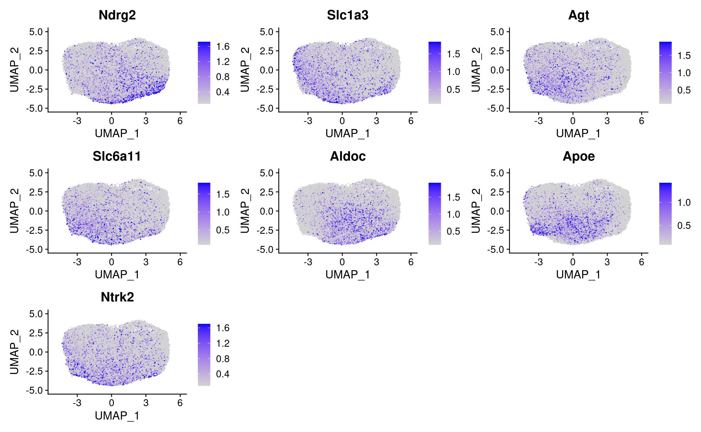
plot_density(combined_sct,
genes.embed[genes.embed %in%
rownames(combined_sct@assays$SCT@scale.data)],
joint = FALSE) + plot_layout(ncol = 3)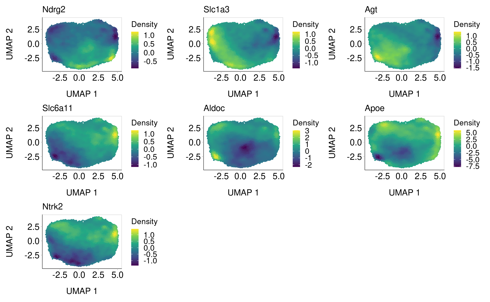
if (!file.exists(here(data_dir, "comb_astrocytes.h5Seurat"))) {
SaveH5Seurat(combined_sct,
filename = here(data_dir, "comb_astrocytes.h5Seurat"))
Convert(here(data_dir, "comb_astrocytes.h5Seurat"),
dest = "h5ad")
}
sessionInfo()R version 4.2.2 (2022-10-31)
Platform: x86_64-pc-linux-gnu (64-bit)
Running under: Ubuntu 22.04.1 LTS
Matrix products: default
BLAS: /usr/lib/x86_64-linux-gnu/openblas-pthread/libblas.so.3
LAPACK: /usr/lib/x86_64-linux-gnu/openblas-pthread/libopenblasp-r0.3.20.so
locale:
[1] LC_CTYPE=en_US.UTF-8 LC_NUMERIC=C
[3] LC_TIME=en_US.UTF-8 LC_COLLATE=en_US.UTF-8
[5] LC_MONETARY=en_US.UTF-8 LC_MESSAGES=en_US.UTF-8
[7] LC_PAPER=en_US.UTF-8 LC_NAME=C
[9] LC_ADDRESS=C LC_TELEPHONE=C
[11] LC_MEASUREMENT=en_US.UTF-8 LC_IDENTIFICATION=C
attached base packages:
[1] stats4 stats graphics grDevices utils datasets methods
[8] base
other attached packages:
[1] schex_1.12.0 shiny_1.7.3
[3] SingleCellExperiment_1.20.0 SummarizedExperiment_1.28.0
[5] Biobase_2.58.0 GenomicRanges_1.50.1
[7] GenomeInfoDb_1.34.2 IRanges_2.32.0
[9] S4Vectors_0.36.0 BiocGenerics_0.44.0
[11] MatrixGenerics_1.10.0 matrixStats_0.62.0
[13] ggraph_2.1.0 mrtree_0.0.0.9000
[15] Nebulosa_1.8.0 swne_0.6.20
[17] patchwork_1.1.2 UpSetR_1.4.0
[19] glmGamPoi_1.10.0 sctransform_0.3.5
[21] SeuratDisk_0.0.0.9020 SeuratWrappers_0.3.1
[23] SeuratObject_4.1.3 Seurat_4.2.1
[25] kableExtra_1.3.4 future_1.29.0
[27] skimr_2.1.4 magrittr_2.0.3
[29] forcats_0.5.2 stringr_1.4.1
[31] dplyr_1.0.10 purrr_0.3.5
[33] readr_2.1.3 tidyr_1.2.1
[35] tibble_3.1.8 ggplot2_3.4.0
[37] tidyverse_1.3.2 here_1.0.1
[39] workflowr_1.7.0
loaded via a namespace (and not attached):
[1] rsvd_1.0.5 ica_1.0-3 svglite_2.1.0
[4] ps_1.7.2 lmtest_0.9-40 rprojroot_2.0.3
[7] crayon_1.5.2 MASS_7.3-58.1 nlme_3.1-160
[10] backports_1.4.1 reprex_2.0.2 rlang_1.0.6
[13] XVector_0.38.0 ROCR_1.0-11 readxl_1.4.1
[16] irlba_2.3.5.1 callr_3.7.3 data.tree_1.0.0
[19] bit64_4.0.5 glue_1.6.2 parallel_4.2.2
[22] processx_3.8.0 spatstat.sparse_3.0-0 spatstat.geom_3.0-3
[25] haven_2.5.1 tidyselect_1.2.0 liger_2.0.1
[28] fitdistrplus_1.1-8 zoo_1.8-11 xtable_1.8-4
[31] evaluate_0.18 cli_3.4.1 zlibbioc_1.44.0
[34] rstudioapi_0.14 miniUI_0.1.1.1 sp_1.5-1
[37] whisker_0.4 bslib_0.4.1 fastmatch_1.1-3
[40] treeio_1.23.0 maps_3.4.1 xfun_0.34
[43] askpass_1.1 usedist_0.4.0 cluster_2.1.4
[46] tidygraph_1.2.2 clusterGeneration_1.3.7 expm_0.999-6
[49] SymSim_0.0.0.9000 ggrepel_0.9.2 ape_5.6-2
[52] listenv_0.8.0 dendextend_1.16.0 png_0.1-7
[55] withr_2.5.0 bitops_1.0-7 ggforce_0.4.1
[58] plyr_1.8.7 cellranger_1.1.0 pracma_2.4.2
[61] coda_0.19-4 pillar_1.8.1 cachem_1.0.6
[64] fs_1.5.2 scatterplot3d_0.3-42 hdf5r_1.3.7
[67] vctrs_0.5.0 ellipsis_0.3.2 generics_0.1.3
[70] tools_4.2.2 entropy_1.3.1 munsell_0.5.0
[73] tweenr_2.0.2 proxy_0.4-27 DelayedArray_0.24.0
[76] fastmap_1.1.0 compiler_4.2.2 abind_1.4-5
[79] httpuv_1.6.6 ggimage_0.3.1 plotly_4.10.1
[82] GenomeInfoDbData_1.2.9 gridExtra_2.3 lattice_0.20-45
[85] deldir_1.0-6 snow_0.4-4 utf8_1.2.2
[88] later_1.3.0 jsonlite_1.8.3 concaveman_1.1.0
[91] scales_1.2.1 tidytree_0.4.1 pbapply_1.5-0
[94] lazyeval_0.2.2 promises_1.2.0.1 R.utils_2.12.1
[97] goftest_1.2-3 spatstat.utils_3.0-1 reticulate_1.26
[100] checkmate_2.1.0 rmarkdown_2.18 cowplot_1.1.1
[103] webshot_0.5.4 Rtsne_0.16 uwot_0.1.14
[106] igraph_1.3.5 survival_3.4-0 numDeriv_2016.8-1.1
[109] yaml_2.3.6 plotrix_3.8-2 systemfonts_1.0.4
[112] htmltools_0.5.3 graphlayouts_0.8.3 quadprog_1.5-8
[115] viridisLite_0.4.1 digest_0.6.30 assertthat_0.2.1
[118] mime_0.12 rappdirs_0.3.3 repr_1.1.4
[121] yulab.utils_0.0.5 future.apply_1.10.0 ggmin_0.0.0.9000
[124] remotes_2.4.2 data.table_1.14.4 R.oo_1.25.0
[127] splines_4.2.2 labeling_0.4.2 googledrive_2.0.0
[130] RCurl_1.98-1.9 broom_1.0.1 ks_1.13.5
[133] hms_1.1.2 modelr_0.1.9 colorspace_2.0-3
[136] base64enc_0.1-3 BiocManager_1.30.19 mnormt_2.1.1
[139] aplot_0.1.8 sass_0.4.2 Rcpp_1.0.9
[142] mclust_6.0.0 RANN_2.6.1 mvtnorm_1.1-3
[145] NNLM_0.4.4 fansi_1.0.3 tzdb_0.3.0
[148] parallelly_1.32.1 R6_2.5.1 grid_4.2.2
[151] ggridges_0.5.4 lifecycle_1.0.3 phytools_1.2-0
[154] googlesheets4_1.0.1 leiden_0.4.3 phangorn_2.10.0
[157] jquerylib_0.1.4 Matrix_1.5-1 RcppAnnoy_0.0.20
[160] RColorBrewer_1.1-3 spatstat.explore_3.0-3 htmlwidgets_1.5.4
[163] umap_0.2.9.0 polyclip_1.10-4 timechange_0.1.1
[166] gridGraphics_0.5-1 optimParallel_1.0-2 rvest_1.0.3
[169] mgcv_1.8-41 globals_0.16.1 openssl_2.0.4
[172] spatstat.random_3.0-1 progressr_0.11.0 codetools_0.2-18
[175] lubridate_1.9.0 FNN_1.1.3.1 getPass_0.2-2
[178] dbplyr_2.2.1 RSpectra_0.16-1 R.methodsS3_1.8.2
[181] gtable_0.3.1 DBI_1.1.3 git2r_0.30.1
[184] highr_0.9 ggfun_0.0.8 tensor_1.5
[187] httr_1.4.4 KernSmooth_2.23-20 vroom_1.6.0
[190] stringi_1.7.8 reshape2_1.4.4 farver_2.1.1
[193] viridis_0.6.2 hexbin_1.28.2 magick_2.7.3
[196] ggtree_3.7.1 xml2_1.3.3 combinat_0.0-8
[199] ggplotify_0.1.0 scattermore_0.8 bit_4.0.4
[202] clustree_0.5.0 spatstat.data_3.0-0 pkgconfig_2.0.3
[205] gargle_1.2.1 knitr_1.40